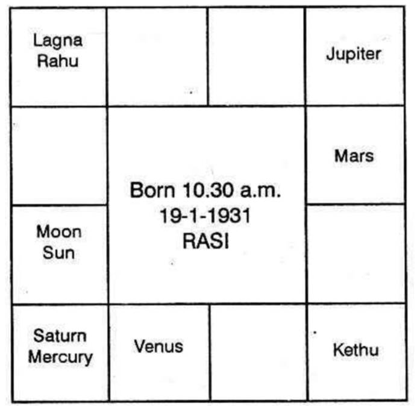

Sir,
When I wrote a letter to you last month asking you to explain how one could be honoured at a time when one had sadesathi (seven and-half). I had, in fact, my horoscope in my mind, as, in Bombay all are frightening me by saying that I am having 7 1/2 years Saturn.

You may remember that when you visited Bombay in Aprii, 1960, you predicted that I should have gains without pains on various occasions in my life and one of the dates was in December, 1964 inspite of the so-called sade-Sati. It is really a pleasant surprise that I have got Rs.500/- as a prize for the prize bond of Rs.5/- denomination purchased by me on 16-4-1960 (on your advice) and the draw was held in Bombay on 1-12-64. The number of my prize bond is A.H. 268076. This is for your information.
Answer:
Very happy to know that you had come by fortune and thereby the prediction also has proved to be true.
Sade-Sati is an excuse for the astrologer with half-baked knowledge, to explain the never ending difficulties and worries of native! It is a meaningless 'Slogan'
You are now running Rahu Dasa, Moon Bhukti, Sun Anthra. Actually you received, the cash on Monday ruled by Moon, in Swathi Star, ruled by Rahu. Why?
Houses 1, 2, 3, 6, 10 and 11, receiving favourable aspects promise victory over enemies; success in litigation; win in competition and gain in lottery, games, etc.
5th house shows the mind to speculate; the tendency, the opportunity to bet, etc. Houses 4, 5, 7, 8, 9 and 12 receiving good aspects are adverse, promise gain.
The fifth house is Cancer. It is owned by Moon. It was in Sravanam star, governed by Moon itself. So Moon gives you the mind to speculate. Moon was in Capricorn, in the eleventh sign and the 11th Bhava. Therefore, gain without much effort is assured during its sub-period.
Sun owns Leo, the 6th house. It is in its own constellation. What is the 6th house? Many, by mistake, think that it indicates only debts and diseases. They miss to note that it causes luck also. 7th house shows those who make similar attempts in speculation-your competitors. Is not the 6th house, twelve to 7? Does it not indicate loss to them? Therefore, loss to competitors means gain to you. During Sun Bhukti, you had promotion. Further, Sun in 11, in Capricorn, will ever offer you success.
Rahu, the beneficial node, representing Jupiter was in Pisces; in your ascendant. It was in Revathi star in the constellation of Mercury who occupies the 10th house and receives the aspect from Jupiter. Mercury, as lord of 4, if it would have been in 4, 5, 7, 8, 9 or 12 to your lagna, will cause loss to you and show disappointment. But planets in 1, 2, 3, 6, 10 and 11 indicate gains to you.
Moon and Sun are in 11. Therefore, you had this, as predicted, during Rahu Dasa, Moon Bhukti, Sun Anthra on a day governed by Moon and at the time when Moon transited in Rahu's star, Swathi.
While Saturn was transiting in the other constellation of Rahu-Sathabhisha, you received the prize. Saturn is lord of 11 and 12. It shows that you will gain and at once make purchases or spend away.
Whenever one tries to find results by transit, it is necessary to note primarily the transit of the Dasanatha, Bhuktinadha, etc. and then, of all other planets.
You are running Rahu Dasa. Rahu is transiting (according to Krishnamurti system) in Taurus, in Mrigasirish star governed by Mars and in Saturn sub ruled by Saturn.
Mars owns the second house and Saturn the 11th. So you gain.
Mars owns the 9th house; Saturn rules the 12th; so you make a long journey to a holy place.
Mars owns the 2nd house and Saturn owns the 12th. Hence, you make purchases.
Mars owns the 9th house and Saturn the 11th house. So you, renew the friendship and you enjoy your life.
During the next year, such changes will not repeat.
But after Rahu Dasa ends on 17 - 1 - 1966, during Jupiter Dasa, Saturn Bhukti, as I already predicted, after March 1968 you will have fortune to a greater extent. As Mercury's sign Gemini is occupied by Jupiter, and Gemini is the third sign of the Zodiac, try lottery. Never go to races.